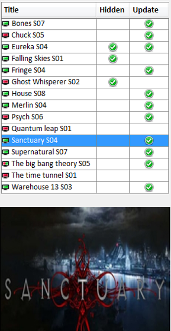

| The Series Panel |
|---|
|  |
The series panel consists of a table with 3 columns and a screenshot of the series.
Clicking anywhere on the Series Panel selects a series.If the clicking is on a table row the series of this row is selected.If clicking is on an empty area of the panel the current selected series (if any) is deselected.The selected series episodes are shown in the [Episodes Panel]. Right clicking on the panel brings up the [Series Administration pop up menu]. To add a sceenshot select it in the [Series Administration] or click on the default screenshot to download one from TvRage.com (TvRage ID of the series must be provided in the [Series Administration]). |